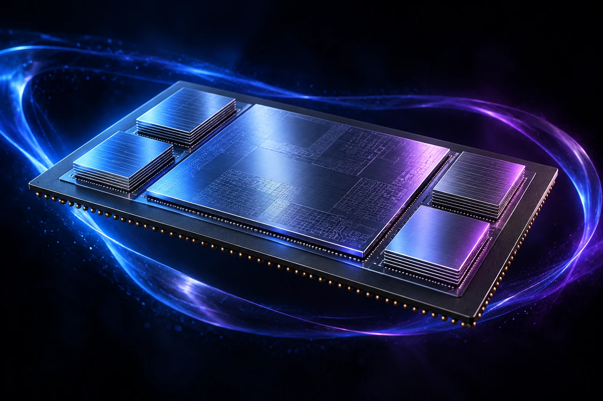
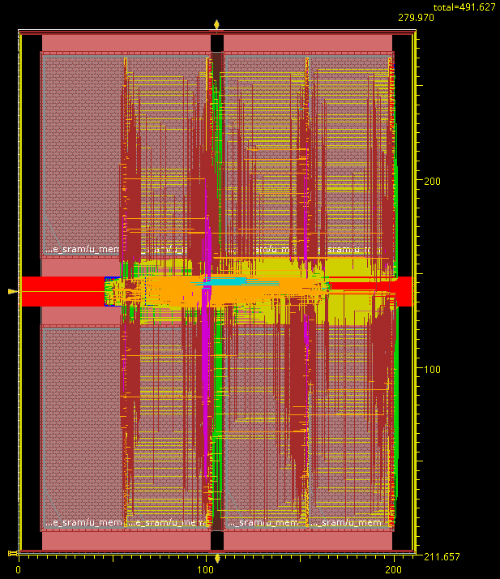

Flash-memory reliability
DFT, fault detection and address remapping. Academic 90 nm implementation.
DIGITAL IC · PROCESSOR / SOC · AI ACCELERATION
Xi-Zhu Wang · Digital IC design.
Memory reliability and reconfigurable AI acceleration.
RTL → Synthesis → APR
Selected capabilities
RESEARCH BACKGROUND
DFT, fault detection and address remapping. Academic 90 nm implementation.
Variable-precision PIM: architecture, RTL verification and academic ASIC implementation.
RECONFIGURABLE COMPUTE
My research reconfigures compute resources and precision for AI workloads. The goal is to balance throughput, memory traffic and task quality.
PRECISION TRADE-OFF
FP16 is the quality reference. INT4 trades some quality for higher peak throughput in this example.
Adapted from the supplied three-axis figure; original surface geometry and labels preserved.
 View full-size figure ↗
View full-size figure ↗Changes execution speed and power while typically keeping the same numerical format.
Changes bit width and compute organization. Throughput and data traffic may improve, but numerical error must be evaluated.
These controls can be combined; precision adaptation does not replace DVFS.
ACM SAC 2026 · Second author · Publication ↗
HBM-PIM architecture · Ramulator2 evaluation · RTL verification · 16 nm academic implementation.
Arm: DVFS reference ↗SELECTED WORK
Mixed-radix streaming RTL with ping-pong memory and self-checking verification.
32-bit CPU and CNN accelerator integration, from RTL verification to physical implementation.
CNN hardware exploring frequency control and stage rates, evolved into a DSP-balanced accelerator.
Design evolution: multi-frequency CNN scheduling → a shared clock with valid-driven clock enables and operand isolation. The current implementation controls activity, rather than changing the supply voltage. Voltage-and-frequency co-control is distinct from this activity-control implementation.
DFT-oriented fault detection and address remapping, implemented in an academic 90 nm flow.
PHYSICAL IMPLEMENTATION
Figures below are sourced directly from public project repositories.

Reed–Solomon decoding and fault injection for HBM-PIM protection.
Source and reports
SRAM-based graph-optimization accelerator with RTL verification and APR evidence.
Source and reportsPUBLIC PROJECT INDEX
Seven repositories
Four repositories
One repository
CONTACT
For technical discussion, collaboration or professional opportunities.